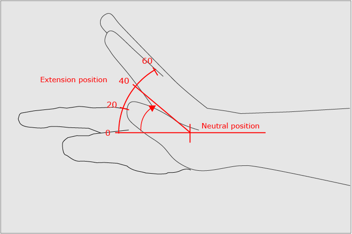
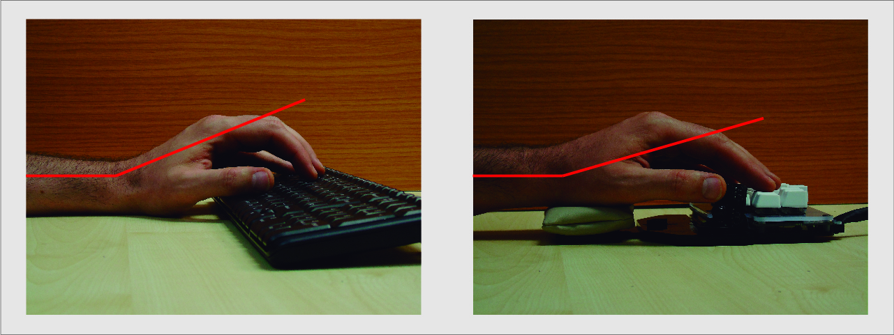
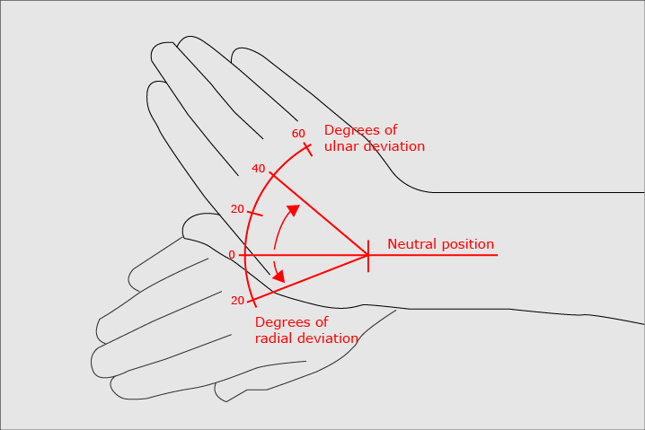
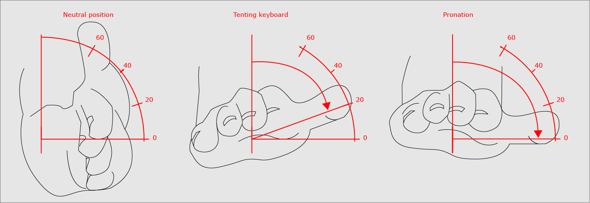

This is Part 2 of a series on ergonomics (read the Part 1 here) where we explaining the different injuries caused by bad positions, and how can you prevent them by using the Shortcut.
Computer users end up having injuries caused by bad ergonomic posture and non-natural repetitive hand movement with their regular keyboard. Basically, the more hours you stay in front of the computer the more likely you are to be injured. This can be avoided by using specific ergonomic devices like the Shortcut.
The hand-wrist articulation is a very complex one, with a widerange of movements and lots of potential injuries caused by awkward positions and repeated movements.
Wrist Extension. Side view.
One of the most common injuries is caused by increasing the angle of the wrist upward during typing also known as wrist extension. This wrist posture creates static loading conditions in the muscles crossing the wrist. It increases the pressure in the carpal tunnel, which can lead to significant inflammation and compression in the median nerve, causing the well known Carpal Tunnel Syndrome and other injuries.

To avoid those injuries, you should keep a neutral angle between hand and forearm with your muscles as relaxed as possible. The Shortcut helps you to maintain this neutral angle by adjusting the wrist (adjusting the palm rest height and depth), and reducing significantly the number of movements needed to type.

Ulnar Deviation. Top view.
Ulnar deviation, or bending the wrist sideways, also creates some static loading conditions in the hand muscles and in the forearm as well. It can cause pain and discomfort, as well as impingement and damage of the ulnar nerve, causing Guyon’s Canal Syndrome and other serious injuries.

When typing on a keyboard, ulnar deviation depends of the relation of the width of the shoulders width and the space between hands as you have to reach the keys. Ideally, in a neutral position your hand should be aligned with your forearms, but with regular keyboards you are forced to break this neutral angle constantly to type.
The Shortcut is a split keyboard, composed by two different independent pieces, so you can move and turn each part until your hands are perfectly aligned with your forearms in a neutral angle.
Wrist Pronation. Front view.
If you look your hands frontally, the neutral position for the forearm and wrist is vertical. When you are forced to maintain your hands horizontally (parallel to the keyboard), the posture is called pronation. This puts a static load and strain on the joints, muscles and membranes in the arm which can lead to fatigue, discomfort, pain or injury.

Unfortunately, there is no 'best' angle, it depends on the person and there are multiple considerations. What may be the best angle for the elbow may not be for other muscle groups like the fingers. For keyboard usage, we can consider that increasing the angle beyond 20° is the maximum viable angle to ideally position the keyboard for most users.
The best solution to reduce pronation is by “tenting” the keyboard, inverting the tenting angle for each hand. The Shortcut includes the tenting option, reducing the wrist pronation and helping to keep wrist angle closer to the neutral posture from this point of view.
Tips and Conclusions